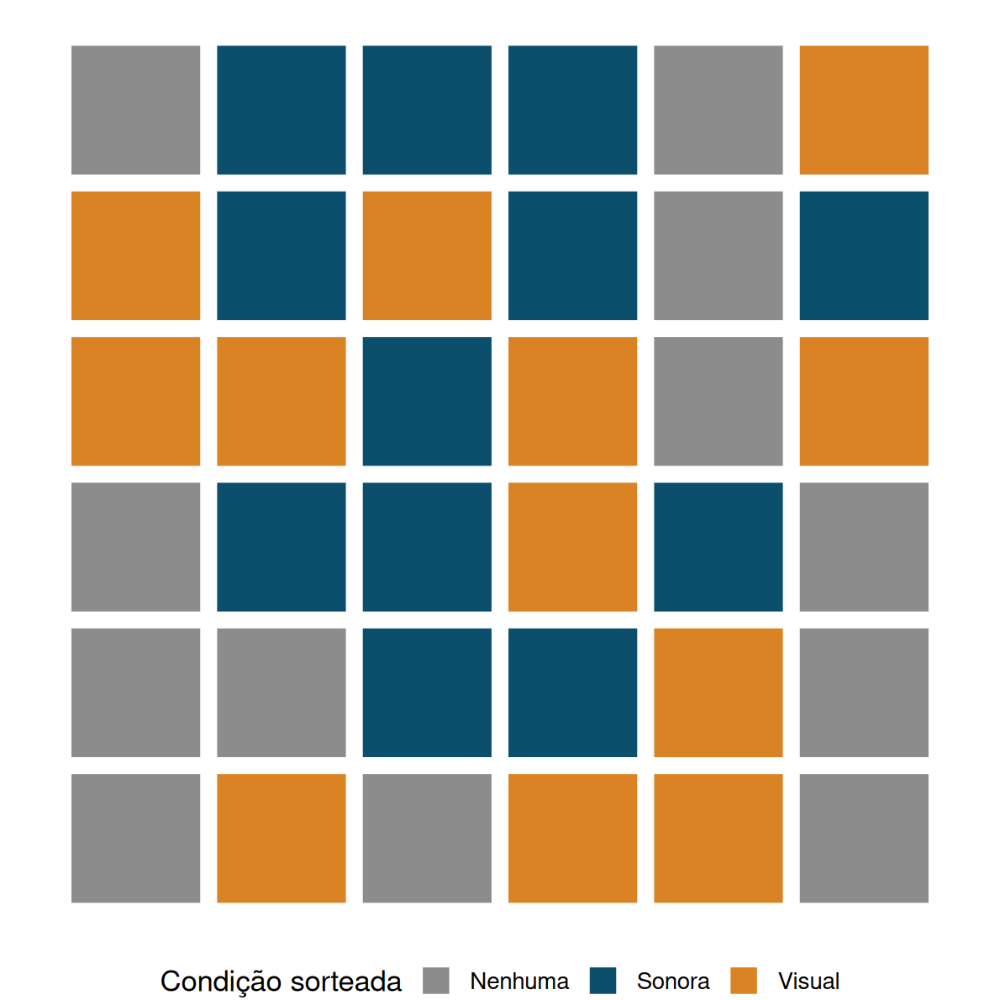
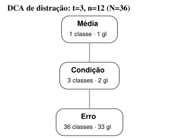
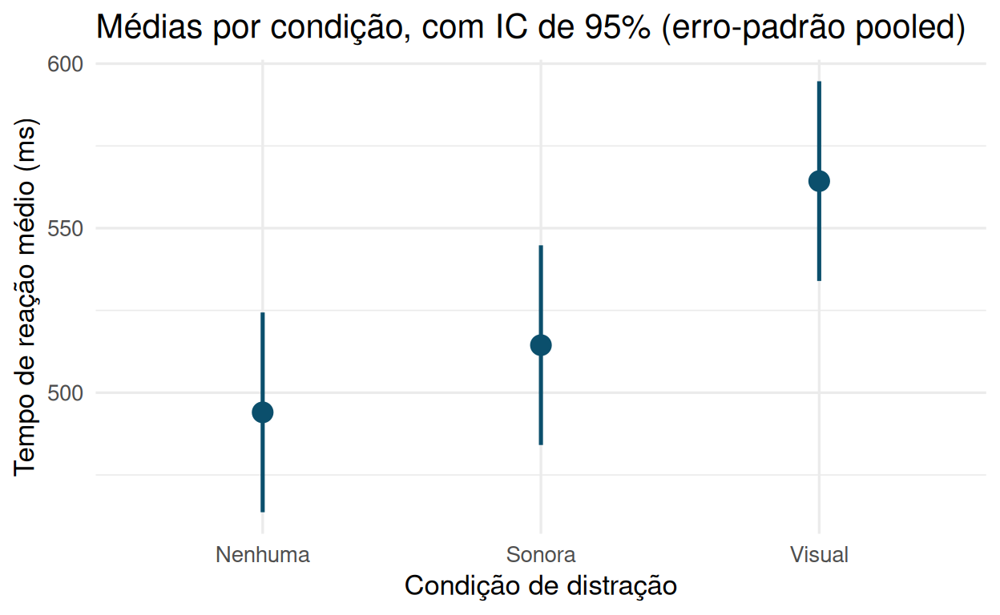
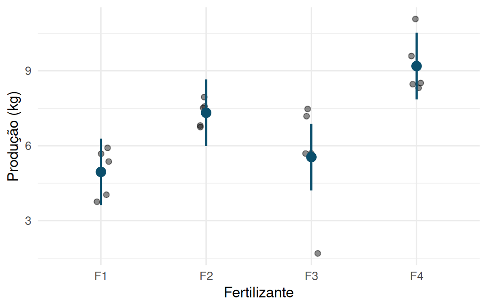

3.2 O delineamento completamente aleatorizado a uma via de classificação
Um pesquisador em psicologia cognitiva quer saber se o tipo de distração afeta o tempo de reação em uma tarefa de decisão simples (pressionar um botão assim que um estímulo aparece na tela). Ele recruta 36 voluntários e sorteia 12 para cada uma de três condições: nenhuma distração, distração sonora (um ruído constante de fundo) e distração visual (elementos piscando na periferia da tela). Cada voluntário realiza a tarefa uma única vez sob sua condição sorteada, e o tempo de reação (em milissegundos) é registrado.
Este é um DCA a uma via de classificação: um único fator (tipo de distração), três níveis, sem blocagem — a atribuição de voluntários às condições é inteiramente aleatória. A unidade experimental e a unidade amostral coincidem aqui (um voluntário, uma medição): não há submuestreo — assunto ao qual voltaremos na Seção 3.3.

Figura 3.3: Layout de um DCA: 36 unidades experimentais dispostas em uma grade puramente ilustrativa (a posição na grade não tem nenhum significado – não há linha, coluna nem vizinhança relevante), coloridas pelo tratamento sorteado. Note a ausência de qualquer padrão espacial ou de agrupamento: essa é justamente a marca do DCA – nenhuma restrição além do sorteio – que o contrasta com os delineamentos em blocos do Capítulo 4.
Antes de qualquer ajuste de modelo, vale sempre inspecionar a estrutura completa do dado e deixar explícito, coluna a coluna, o papel de cada variável — o hábito que evita, mais adiante, o erro de pseudorreplicação descrito no Capítulo 1 (Seção 1.2):
## Rows: 36
## Columns: 3
## $ sujeito <int> 1, 2, 3, 4, 5, 6, 7, 8, 9, 10, 11, 12, 13, 14, 15, 16, 17…
## $ condicao <fct> Nenhuma, Nenhuma, Nenhuma, Nenhuma, Nenhuma, Nenhuma, Nen…
## $ tempo_reacao <dbl> 488.9892, 354.8937, 448.6911, 573.3930, 515.5600, 502.043…| Variável | Papel |
|---|---|
sujeito
|
Identificador da unidade experimental (e, aqui, também da unidade amostral) |
condicao
|
Fator de tratamento (3 níveis) — sorteado por sujeito
|
tempo_reacao
|
Resposta — uma única medição por sujeito
|
3.2.1 O modelo estatístico
O modelo de efeitos fixos para um DCA com \(t\) tratamentos, cada um com \(n_i\) repetições (\(i = 1, \ldots, t\); \(j = 1, \ldots, n_i\); \(N = \sum_i n_i\)), é
\[ Y_{ij} = \mu + \tau_i + \varepsilon_{ij}, \qquad \varepsilon_{ij} \overset{iid}{\sim} N(0, \sigma^2), \]
em que \(\mu\) é a média geral, \(\tau_i\) é o efeito (fixo, desconhecido) do \(i\)-ésimo tratamento, sujeito à restrição \(\sum_i n_i \tau_i = 0\) (ou \(\sum_i \tau_i = 0\) no caso balanceado) para tornar o modelo identificável, e \(\varepsilon_{ij}\) é o erro experimental — a soma de tudo aquilo que não é explicado pelo tratamento nem pela média geral (Capítulo 1, Seção 1.3). A média do \(i\)-ésimo tratamento é \(\mu_i = \mu + \tau_i\), de modo que o modelo pode ser lido, de forma equivalente, como \(Y_{ij} = \mu_i + \varepsilon_{ij}\): cada observação é a média populacional do seu grupo mais um desvio aleatório.
As variáveis aleatórias envolvidas são: \(Y_{ij}\) (a resposta observada, aleatória antes da coleta de dados), \(\varepsilon_{ij}\) (o erro experimental, aleatório e não observável diretamente) — já \(\mu\) e \(\tau_i\) são parâmetros fixos e desconhecidos, e \(t\), \(n_i\) são constantes de delineamento, fixadas pelo pesquisador antes do experimento.
Os estimadores de mínimos quadrados — que, sob o modelo acima, coincidem com os estimadores de máxima verossimilhança — são as médias amostrais:
\[ \hat\mu_i = \bar Y_{i \cdot} = \frac{1}{n_i}\sum_{j=1}^{n_i} Y_{ij}, \qquad \hat\sigma^2 = \text{MS}_E = \frac{1}{N - t}\sum_{i=1}^t \sum_{j=1}^{n_i} (Y_{ij} - \bar Y_{i\cdot})^2, \]
em que \(\text{MS}_E\) (quadrado médio do erro) é definido formalmente na próxima seção.
3.2.2 Notação matricial: o DCA como caso particular do modelo linear geral
O Capítulo 2 (Seções 2.7 e 2.7.1) já anunciava que a decomposição \(\mathbf{Y} = \mathbf{X}\boldsymbol{\beta} + \boldsymbol{\varepsilon}\), especializada para um único fator categórico, se tornaria a soma de quadrados entre e dentro de tratamentos da ANOVA. Cumprimos essa promessa aqui, usando a parametrização de médias de célula: \(t\) colunas indicadoras (sem intercepto), uma por tratamento, de modo que \(\boldsymbol{\beta} = (\mu_1,\ldots,\mu_t)'\) diretamente — sem a restrição de soma zero que a parametrização \(\mu+\tau_i\) da Seção 3.2.1 exige para identificabilidade.
\[ \mathbf{X}_{[ij],\,i'} = \mathbb{1}\{i'=i\}, \qquad \mathbf{Y} = \mathbf{X}\boldsymbol{\beta} + \boldsymbol{\varepsilon}, \qquad \boldsymbol{\varepsilon}\sim N(\mathbf{0},\sigma^2\mathbf{I}_N). \]
Para os seis primeiros voluntários do experimento de distração (dois por condição), \(\mathbf{X}\) é
toy <- dados_tr %>% group_by(condicao) %>% slice_head(n = 2) %>% ungroup()
X_toy <- model.matrix(~ condicao - 1, data = toy)
X_toy## condicaoNenhuma condicaoSonora condicaoVisual
## 1 1 0 0
## 2 1 0 0
## 3 0 1 0
## 4 0 1 0
## 5 0 0 1
## 6 0 0 1
## attr(,"assign")
## [1] 1 1 1
## attr(,"contrasts")
## attr(,"contrasts")$condicao
## [1] "contr.treatment"Como as colunas de \(\mathbf{X}\) são indicadoras de grupos disjuntos, \(\mathbf{X}'\mathbf{X} = \mathrm{diag}(n_1,\ldots,n_t)\) — diagonal, sem termos cruzados — e \(\mathbf{X}\) tem posto completo (\(t\), um por coluna): diferente do caso geral do Capítulo 2, aqui todo \(\mu_i\) (e toda diferença \(\mu_i-\mu_k\)) é trivialmente estimável, sem exigir contrastes especiais.
## condicaoNenhuma condicaoSonora condicaoVisual
## condicaoNenhuma 12 0 0
## condicaoSonora 0 12 0
## condicaoVisual 0 0 12Consequentemente, \(\hat{\boldsymbol{\beta}} = (\mathbf{X}'\mathbf{X})^{-1}\mathbf{X}'\mathbf{Y} = (\bar Y_{1\cdot}, \ldots, \bar Y_{t\cdot})'\): o vetor de médias amostrais reaparece, agora como instância direta da fórmula geral de mínimos quadrados, não como um resultado ad hoc.
Como \(\mathbf{X}\) tem posto completo, o Teorema de Gauss-Markov (Seção 2.6) se aplica sem qualificações: \(\hat{\boldsymbol{\beta}}\) é o BLUE de \(\boldsymbol{\beta}\) — em particular, \(\hat\mu_i=\bar Y_{i\cdot}\) é o BLUE de \(\mu_i\) — e
\[ \mathrm{Cov}(\hat{\boldsymbol{\beta}}) = \sigma^2(\mathbf{X}'\mathbf{X})^{-1} = \sigma^2\,\mathrm{diag}(1/n_1,\ldots,1/n_t), \]
exatamente o erro-padrão \(\sqrt{\sigma^2/n_i}\) usado nos ICs da próxima seção — agora com justificativa matricial completa em vez de apenas invocada. A dedução detalhada, para este \(\mathbf{X}\) específico, é o Exercício 4 da Lista 04.
A matriz de projeção \(\mathbf{P}_X=\mathbf{X}(\mathbf{X}'\mathbf{X})^{-1}\mathbf{X}'\) herda a estrutura de blocos de \(\mathbf{X}'\mathbf{X}\): é bloco-diagonal, com o bloco do grupo \(i\) igual a \(\tfrac{1}{n_i}\mathbf{J}_{n_i}\) (a matriz \(n_i\times n_i\) de 1’s dividida por \(n_i\)) — projetar \(\mathbf{Y}\) com \(\mathbf{P}_X\) substitui cada observação pela média do seu próprio grupo, e nada mais:
## 1 2 3 4 5 6
## 1 0.5 0.5 0.0 0.0 0.0 0.0
## 2 0.5 0.5 0.0 0.0 0.0 0.0
## 3 0.0 0.0 0.5 0.5 0.0 0.0
## 4 0.0 0.0 0.5 0.5 0.0 0.0
## 5 0.0 0.0 0.0 0.0 0.5 0.5
## 6 0.0 0.0 0.0 0.0 0.5 0.5Com \(\mathbf{P}_X\) em mãos, a decomposição \(\mathbf{M}=(\mathbf{P}_X-\tfrac1N\mathbf{J})+ (\mathbf{I}_N-\mathbf{P}_X)\) do Capítulo 2 (Seção 2.7.1) — válida porque o espaço-coluna de \(\mathbf{X}\) contém \(\mathbf{1}\) (a soma das \(t\) colunas indicadoras é o vetor de uns) — dá, sem nenhuma soma indexada por \(i,j\),
\[ \underbrace{\mathbf{Y}'\mathbf{M}\mathbf{Y}}_{SQ_{\text{Total}}} = \underbrace{\mathbf{Y}'\!\left(\mathbf{P}_X-\tfrac1N\mathbf{J}\right)\!\mathbf{Y}}_{SQ_{\text{Trat}}} + \underbrace{\mathbf{Y}'(\mathbf{I}_N-\mathbf{P}_X)\mathbf{Y}}_{SQ_E}. \]
Substituindo a forma em blocos de \(\mathbf{P}_X\), essas duas formas quadráticas se reduzem exatamente às somas indexadas \(\sum_i n_i(\bar Y_{i\cdot}-\bar Y_{\cdot\cdot})^2\) e \(\sum_{i,j} (Y_{ij}-\bar Y_{i\cdot})^2\) da Seção 3.2.5 — a tabela de ANOVA não é maquinaria nova, é o Teorema de formas quadráticas idempotentes do Capítulo 2 (Seção 2.10) aplicado às matrizes \(\mathbf{P}_X-\tfrac1N\mathbf{J}\) (idempotente, posto \(t-1\)) e \(\mathbf{I}_N-\mathbf{P}_X\) (idempotente, posto \(N-t\)). As duas formas quadráticas correspondentes são independentes — as matrizes, sendo determinísticas, não têm do que ser independentes; o que o resultado de Craig garante é que \(\mathbf A_1\mathbf A_2=\mathbf 0\) implica independência das formas \(\mathbf Y'\mathbf A_1\mathbf Y\) e \(\mathbf Y'\mathbf A_2\mathbf Y\) sob normalidade, e aqui \((\mathbf P_X-\tfrac1N\mathbf J)(\mathbf I_N-\mathbf P_X)=\mathbf 0\). Daí decorre diretamente a distribuição \(F_{t-1,N-t}\) sob \(H_0\) e a não centralidade \(\lambda\) sob \(H_1\) da Seção 3.2.5: nenhuma suposição adicional além das já feitas no Capítulo 2.
3.2.3 Resultados potenciais e o estimando causal
O que significa, formalmente, “o tipo de distração afeta o tempo de reação”? Até aqui, \(\mu_i-\mu_k\) é apenas um contraste entre parâmetros do modelo — para interpretá-lo como um efeito causal, precisamos do arcabouço de resultados potenciais de Neyman e Rubin (Imbens & Rubin, 2015; Rubin, 1974; Splawa-Neyman, 1990).
Para cada uma das \(N\) unidades experimentais \(u=1,\ldots,N\) da população em estudo, postulamos \(t\) resultados potenciais \(Y_u(1),\ldots,Y_u(t)\) — um por tratamento —, valores fixos (não aleatórios) que existiriam se \(u\) recebesse cada um dos tratamentos. Dois pressupostos, reunidos sob o nome SUTVA (stable unit treatment value assumption) (Imbens & Rubin, 2015), tornam \(Y_u(i)\) bem definido:
- Sem interferência: o resultado potencial de \(u\) depende apenas do tratamento atribuído a \(u\), não do que é atribuído às demais unidades (um voluntário sob “nenhuma distração” não é afetado pela condição sorteada para outro voluntário).
- Sem versões ocultas de tratamento: “distração sonora” significa a mesma intervenção, consistente, para toda unidade que a recebe.
Sob SUTVA, o resultado observado é \(Y_u = Y_u(T_u)\), em que \(T_u\in\{1,\ldots,t\}\) é o tratamento efetivamente sorteado para \(u\) — apenas um dos \(t\) resultados potenciais de cada unidade é jamais observável; os demais permanecem contrafactuais. O estimando causal de interesse, para dois tratamentos \(i,k\), é o efeito médio de tratamento na população finita do experimento,
\[ \tau_{i,k} = \frac{1}{N}\sum_{u=1}^N \big[Y_u(i) - Y_u(k)\big]. \]
Proposição (Neyman, 1923/1990). Em um DCA — \(N\) unidades, \(n_i\) sorteadas para o tratamento \(i\) por amostragem aleatória simples sem reposição, para cada \(i\) —, a diferença de médias observadas \(\bar Y_i^{\text{obs}} - \bar Y_k^{\text{obs}}\) é não viesada para \(\tau_{i,k}\), em que a esperança é tomada sobre o mecanismo de aleatorização, mantendo os \(Y_u(i)\) fixos.
Demonstração. Seja \(R_{u,i}=\mathbb{1}\{T_u=i\}\). O mecanismo de aleatorização completa garante, por simetria, que toda unidade \(u\) tem a mesma chance marginal de cair no grupo \(i\): \(P(R_{u,i}=1)=n_i/N\), para todo \(u\) — essa é a única propriedade probabilística de que precisamos, e ela não depende de \(Y_u(i)\) de forma alguma. Como \(Y_u^{\text{obs}}=Y_u(i)\) quando \(R_{u,i}=1\),
\[ \bar Y_i^{\text{obs}} = \frac{1}{n_i}\sum_{u=1}^N R_{u,i}\,Y_u(i) \;\Longrightarrow\; E\big[\bar Y_i^{\text{obs}}\big] = \frac{1}{n_i}\sum_{u=1}^N E[R_{u,i}]\,Y_u(i) = \frac{1}{n_i}\sum_{u=1}^N \frac{n_i}{N}\,Y_u(i) = \frac{1}{N}\sum_{u=1}^N Y_u(i), \]
pela linearidade da esperança — os \(Y_u(i)\) são constantes, só \(R_{u,i}\) é aleatório. O mesmo argumento vale para o tratamento \(k\), e subtraindo,
\[ E\big[\bar Y_i^{\text{obs}} - \bar Y_k^{\text{obs}}\big] = \frac{1}{N}\sum_u Y_u(i) - \frac{1}{N}\sum_u Y_u(k) = \tau_{i,k}. \qquad\blacksquare \]
Note o que a demonstração não usa: nenhuma suposição sobre a distribuição dos \(Y_u(i)\), nenhuma normalidade, nenhum modelo \(Y_{ij}=\mu+\tau_i+\varepsilon_{ij}\). A validade do estimador \(\bar Y_i^{\cdot}-\bar Y_k^{\cdot}\) para o efeito causal médio vem inteiramente do mecanismo físico de aleatorização — o mesmo mecanismo que justificou o teste de aleatorização da Seção 3.1. Os dois resultados são complementares: o argumento de Fisher testa a hipótese nula “aguda” \(Y_u(i)=Y_u(k)\) para toda unidade \(u\) (nenhum efeito, em nenhum caso), enquanto o argumento de Neyman estima e testa a hipótese “fraca” \(\tau_{i,k}=0\) (nenhum efeito, em média). O que o modelo normal-linear \(Y_{ij}=\mu+\tau_i+\varepsilon_{ij}\) acrescenta a essa base puramente aleatorizada não é a validade do ponto estimado — já garantida por Neyman — mas sim distribuições exatas em amostra finita (\(t\), \(F\)) para intervalos de confiança e testes, como visto na Seção 3.2.4 a seguir.
3.2.4 Estimação e intervalos de confiança
Sob o modelo normal, \(\bar Y_{i\cdot} \sim N\!\left(\mu_i, \sigma^2/n_i\right)\) e \((N-t)\,\text{MS}_E/\sigma^2 \sim \chi^2_{N-t}\), independente de todas as \(\bar Y_{i\cdot}\). Isso dá origem a dois intervalos de confiança fundamentais, ambos baseados na distribuição \(t\) de Student com \(N-t\) graus de liberdade (os graus de liberdade do erro).
IC para a média de um tratamento. Um intervalo de \(100(1-\alpha)\%\) de confiança para \(\mu_i\) é
\[ \bar Y_{i\cdot} \; \pm \; t_{\alpha/2,\, N-t} \sqrt{\frac{\text{MS}_E}{n_i}}. \]
IC para a diferença entre duas médias de tratamento. Um intervalo de \(100(1-\alpha)\%\) de confiança para \(\mu_i - \mu_k\) (\(i \neq k\)) é
\[ (\bar Y_{i\cdot} - \bar Y_{k\cdot}) \; \pm \; t_{\alpha/2,\, N-t} \sqrt{\text{MS}_E\left(\frac{1}{n_i} + \frac{1}{n_k}\right)}. \]
Note que os dois intervalos usam o mesmo \(\text{MS}_E\) — a combinação (pooling) da variabilidade de todos os \(t\) grupos para estimar um único \(\sigma^2\) comum é o que torna a ANOVA mais eficiente do que fazer \(t\) estimativas de variância separadas, uma por grupo, desde que a suposição de variância comum (Seção 3.5) seja razoável.
3.2.5 A tabela de análise de variância
A ANOVA decompõe a soma de quadrados total em uma parte atribuível ao tratamento e uma parte residual (erro):
\[ \underbrace{\sum_{i,j}(Y_{ij}-\bar Y_{\cdot\cdot})^2}_{SQ_{\text{Total}}} = \underbrace{\sum_i n_i(\bar Y_{i\cdot}-\bar Y_{\cdot\cdot})^2}_{SQ_{\text{Trat}}} + \underbrace{\sum_{i,j}(Y_{ij}-\bar Y_{i\cdot})^2}_{SQ_E}. \]
| Fonte de variação | G.l. | Soma de quadrados | Quadrado médio | F |
|---|---|---|---|---|
| Tratamento | \(t-1\) | \(SQ_{\text{Trat}}\) | \(MS_{\text{Trat}} = SQ_{\text{Trat}}/(t-1)\) | \(MS_{\text{Trat}}/MS_E\) |
| Erro | \(N-t\) | \(SQ_E\) | \(MS_E = SQ_E/(N-t)\) | |
| Total | \(N-1\) | \(SQ_{\text{Total}}\) |
A coluna de graus de liberdade da tabela acima é, em miniatura, o diagrama de Hasse de um único fator já apresentado no Capítulo 2 (Seção 2.2): uma cadeia de três nós Média \(\prec\) Tratamento \(\prec\) Erro. Vale a pena vê-lo com os números concretos deste próprio experimento (\(t=3\) condições, \(n=12\) voluntários por condição, \(N=36\)), em vez de reler apenas o exemplo genérico do capítulo anterior:
nos_tr <- tibble(
termo = c("Média", "Condição", "Erro"),
classes = c(1, 3, 36) # t=3 condicoes; N=36 voluntarios
)
arestas_tr <- tibble(de = c("Média", "Condição"), para = c("Condição", "Erro"))
knitr::include_graphics(
hasse_svg(nos_tr, arestas_tr,
arquivo = "figuras/hasse/dca-distracao.svg",
titulo = "DCA de distração: t=3, n=12 (N=36)")
)
Figura 3.4: Diagrama de Hasse do DCA de distração e tempo de reação: t=3 condições, n=12 voluntários por condição (N=36). A mesma cadeia de três nós do exemplo genérico do Capítulo 2 (Seção sobre diagramas de Hasse), agora com os graus de liberdade deste experimento.
Os três nós somam \(1+2+33=36=N\), confirmando a leitura da tabela: nenhuma outra fonte de variação estrutural além da condição experimental, exatamente como no exemplo genérico do Capítulo 2 — a diferença entre os dois diagramas é só de escala (\(t=3\) contra \(t=4\)), não de forma, porque os dois são o mesmo delineamento (um único fator, sem blocagem nem aninhamento).
Sob \(H_0: \tau_1 = \cdots = \tau_t = 0\) (nenhum efeito de tratamento), \(F = MS_{\text{Trat}}/MS_E \sim F_{t-1,\,N-t}\); rejeita-se \(H_0\) para valores grandes de \(F\). Quando \(H_0\) é falsa, \(F\) segue uma distribuição \(F\) não central, cujo parâmetro de não centralidade é
\[ \lambda = \frac{\sum_i n_i \tau_i^2}{\sigma^2} \;\overset{\text{balanceado}}{=}\; N f^2 , \]
em que \(f\) é o tamanho de efeito de Cohen. Quanto maiores os efeitos de tratamento em relação ao erro, maior \(\lambda\) e maior o poder do teste.
Convém distinguir \(\lambda\) de uma segunda quantidade que aparece na literatura clássica e é fácil de confundir com ele:
\[ \Phi^2 = \frac{\lambda}{t} = \frac{\sum_i n_i \tau_i^2}{t\,\sigma^2} \;\overset{\text{balanceado}}{=}\; n f^2 . \]
\(\Phi^2\) é a grandeza auxiliar usada nas curvas características de operação (curvas OC) de
Montgomery (2017), tabuladas para leitura gráfica do poder; não é o parâmetro de não
centralidade de distribuição alguma. A distinção é prática, não pedante: funções como
pwr::pwr.anova.test() e stats::pf(..., ncp = ) esperam \(\lambda = Nf^2\), de modo que usar
\(\Phi^2\) no lugar de \(\lambda\) subestima o poder por um fator \(t\). É \(\lambda\) que será a chave
da Seção 3.2.6.
## Df Sum Sq Mean Sq F value Pr(>F)
## condicao 2 31366 15683 5.872 0.00658 **
## Residuals 33 88133 2671
## ---
## Signif. codes: 0 '***' 0.001 '**' 0.01 '*' 0.05 '.' 0.1 ' ' 1MS_E <- summary(modelo_tr)[[1]][["Mean Sq"]][2]
df_E <- summary(modelo_tr)[[1]][["Df"]][2]
t_crit <- qt(0.975, df_E)
dados_tr %>%
group_by(condicao) %>%
summarise(media = mean(tempo_reacao), n = n(), .groups = "drop") %>%
mutate(
ep = sqrt(MS_E / n),
lwr = media - t_crit * ep,
upr = media + t_crit * ep
) %>%
kable(digits = 1, caption = "Médias por condição com IC de 95% (pooled MS_E)") %>%
kable_styling(full_width = FALSE)| condicao | media | n | ep | lwr | upr |
|---|---|---|---|---|---|
| Nenhuma | 494.0 | 12 | 14.9 | 463.7 | 524.4 |
| Sonora | 514.4 | 12 | 14.9 | 484.1 | 544.8 |
| Visual | 564.3 | 12 | 14.9 | 534.0 | 594.7 |
O teste \(F\) rejeita \(H_0\) (\(p = 0.0066\)): o tipo de distração afeta o tempo de reação médio. Os intervalos de confiança individuais mostram que a condição visual se destaca das demais, um ponto que será formalizado com comparações múltiplas (próxima seção do capítulo, além do escopo deste texto).

Figura 3.5: Médias de tempo de reação por condição, com intervalos de confiança de 95% construídos a partir do quadrado médio do erro (QME) comum às três condições.
O gráfico traduz visualmente a tabela anterior: os três intervalos usam a mesma largura, porque todos compartilham o mesmo \(QME\) (o erro-padrão pooled da ANOVA, não um erro-padrão calculado grupo a grupo), o que é, por si só, a suposição de variância homogênea em ação. A condição visual se destaca claramente das demais — seu intervalo não se sobrepõe ao das outras duas —, enquanto os intervalos de “Nenhuma” e “Sonora” se tocam, sugerindo que a diferença entre elas é mais tênue. Essa leitura visual antecipa exatamente o que os procedimentos de comparação múltipla da Seção 3.6 vão formalizar com rigor estatístico.
3.2.6 Número de réplicas necessário
Quantas unidades experimentais por tratamento são necessárias? A resposta depende de três escolhas do pesquisador — o nível de significância \(\alpha\), o poder desejado \(1-\beta\), e o tamanho de efeito mínimo que se quer ter boa chance de detectar — e de uma quantidade que raramente é conhecida com exatidão antes do experimento: \(\sigma^2\), normalmente estimada a partir de um estudo piloto ou da literatura.
Uma forma conveniente de expressar o tamanho de efeito para \(t\) grupos é o \(f\) de Cohen,
\[ f = \frac{\sigma_\mu}{\sigma}, \qquad \sigma_\mu^2 = \frac{1}{t}\sum_i (\mu_i - \bar\mu)^2, \]
isto é, o desvio-padrão das médias populacionais dividido pelo desvio-padrão comum dentro dos grupos — quanto mais as médias se afastam entre si em relação ao ruído, maior \(f\). A relação com o parâmetro de não centralidade da Seção 3.2.5 é direta: \(\lambda = N f^2 = n\,t\,f^2\) no caso balanceado (e a grandeza das curvas OC é \(\Phi^2=\lambda/t=n f^2\)). Dado \(f\), \(\alpha\) e o poder desejado, o número de réplicas \(n\) por grupo é obtido numericamente (não há fórmula fechada, pois a distribuição \(F\) não central não se inverte analiticamente).
medias_grupo <- c(494, 514, 564) # estimativa piloto das médias por condição
sigma_piloto <- sqrt(MS_E) # estimativa piloto do desvio-padrão comum
f_cohen <- sqrt(mean((medias_grupo - mean(medias_grupo))^2)) / sigma_piloto
f_cohen## [1] 0.5696575##
## Balanced one-way analysis of variance power calculation
##
## k = 3
## n = 10.95974
## f = 0.5696575
## sig.level = 0.05
## power = 0.8
##
## NOTE: n is number in each groupCom o tamanho de efeito observado neste estudo (\(f \approx 0.57\)), seriam necessárias cerca de 11 unidades por grupo para poder de 80% — as 12 efetivamente usadas já garantem poder ligeiramente superior a 80%. Na prática, essa conta deve ser feita antes da coleta de dados, com \(f\) estimado a partir de um piloto, da literatura, ou de uma diferença mínima de interesse prático especificada pelo próprio pesquisador (por exemplo, “uma diferença de 40 ms ou mais entre condições é relevante clinicamente”).
3.2.7 Um segundo exemplo, com dado real: fertilizante em feijão
O exemplo de distração e tempo de reação, acima, foi simulado deliberadamente — controlar o “efeito verdadeiro” permite verificar cada passo da álgebra contra um valor conhecido. Fecha-se a seção com a mesma maquinaria aplicada a um dado genuinamente real, sem efeito verdadeiro conhecido de antemão.
Um agrônomo compara quatro fertilizantes (F1–F4) quanto à produção de feijão. Vinte parcelas de terra, previamente homogeneizadas quanto a exposição solar e tipo de solo, são sorteadas em quatro grupos de cinco (UE = parcela), cada grupo recebendo um dos quatro fertilizantes. Produção (kg) é medida ao final da colheita.
feijao <- read_csv("data/feijao.csv", show_col_types = FALSE) %>%
mutate(Fertilizante = factor(Fertilizante, labels = paste0("F", 1:4)))
glimpse(feijao)## Rows: 20
## Columns: 3
## $ Parcela <dbl> 1, 2, 3, 4, 5, 6, 7, 8, 9, 10, 11, 12, 13, 14, 15, 16, 17…
## $ Fertilizante <fct> F1, F1, F4, F1, F2, F3, F4, F4, F3, F1, F2, F3, F3, F3, F…
## $ Producao <dbl> 5.91, 3.76, 8.31, 4.04, 6.81, 1.69, 8.46, 8.51, 5.69, 5.3…## Df Sum Sq Mean Sq F value Pr(>F)
## Fertilizante 3 54.74 18.248 9.209 0.000897 ***
## Residuals 16 31.70 1.982
## ---
## Signif. codes: 0 '***' 0.001 '**' 0.01 '*' 0.05 '.' 0.1 ' ' 1
Figura 3.6: Produção de feijão por fertilizante: pontos individuais (parcelas) e média por grupo com intervalo de confiança de 95%, construído a partir do QME comum.
O teste \(F\) rejeita \(H_0\) (\(p<0{,}001\)): há diferença real entre fertilizantes. F4 (média 9.2 kg) supera claramente F1 (média 5 kg), com F2 e F3 numa faixa intermediária — leitura visual confirmada pelos intervalos de confiança do gráfico, que já antecipa o que uma comparação múltipla (Seção 3.7) formalizaria.
Honestidade estatística: ao contrário do exemplo simulado, aqui não há garantia de que os pressupostos do modelo se sustentam — e de fato não se sustentam perfeitamente. O teste de Shapiro-Wilk nos resíduos dá \(p\approx 0.046\) — no limiar de \(0{,}05\), uma normalidade duvidosa com só 20 observações. É exatamente o tipo de situação real que a Seção 3.5, a seguir, ensina a diagnosticar e tratar (em vez de ignorar).